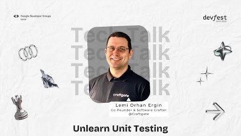
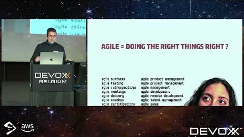

Sharing
Everything I share in public, in one place: the slides and recordings of my talks, code, my podcast, articles, and the accounts I post from.
Slides


Video
From the top of my playlist of talk recordings on YouTube, which also has the ones published on conference channels. There is also one on modularity.
-
 Rebirth of Software Craftsmanship in the AI Era
Rebirth of Software Craftsmanship in the AI Era
-
 Product Developer: From Writing Code to Building Products
Product Developer: From Writing Code to Building Products
-

Unlearn Unit Testing -
 “We Have Tests” Is Not Enough: Unit Testing for Reliable Code
“We Have Tests” Is Not Enough: Unit Testing for Reliable Code
-
 “We Have Tests” Is Not Enough: Unit Testing for Reliable Code
“We Have Tests” Is Not Enough: Unit Testing for Reliable Code
-

Pure Agile: Building a Culture Without Scrum, Kanban and XP
-
TEDx, 2019
The Apple That Made Me Famous Overnight
In Turkish, at TEDxTarsusAmericanCollege: the night a macOS root login bug made me known worldwide, and what it says about professional ethics. The root bug page has the whole story.
Code
My own repositories on GitHub. The year is when each one started.
-
2026, Python
brewdash
The missing dashboard for Homebrew on the Mac. Installs from its own Homebrew tap; project page.
-
2026, TypeScript
keycode
A terminal-based presentation tool for macOS.
-
2026, Python
audiocript
A terminal-based audio transcription app for macOS.
-
2026, JavaScript
firefox-advanced-tab-manager
An advanced tab manager for the browser.
-
2017
personal-zen
Some words about my values and principles, and about life in general.
Audio
-
Podcast, 2018 – 2020
Lemi'nin Not Defteri
My podcast in Turkish, on software, technology and culture. Also on Apple Podcasts, Spreaker and YouTube, and as an RSS feed.
-
Guest, 2020
Technical: How Does Craftbase Build Software?
On the Üretim Bandı podcast, about how we built software at Craftbase.
-
Guest, 2017
How Does iyzico Build Products?
On the Üretim Bandı podcast, about how iyzico builds products.
-
Guest, 2016
On fighting elephants in the room
On the IT Serbia Podcast, in English.
Writing
-
Medium, 2025
10 Things Every Foreign Speaker Should Know Before Stepping on the Conference Stage
Advice for speakers about to talk in a country not their own.
-
InfoQ, 2019
How to Slow Down to Go Faster Than Ever in Software Development
Rushing makes a team neither faster nor more productive. Slowing down on practice and code quality does.
-
Medium, 2017
The Story Behind “anyone can login as root” Tweet
Written the day after the macOS High Sierra root bug went public. The root bug page tells it again, with the press coverage.
-
Blog, 2012 – 2014
Agilistanbul
My Turkish blog on agile software development. The domain is gone, so the link goes to the Internet Archive's copy.
Accounts
- X
- GitHub
- YouTube
- Speaker Deck
- Medium
-
Community
Software Craftsmanship Turkey
The community I founded, on Kommunity and on GitHub.